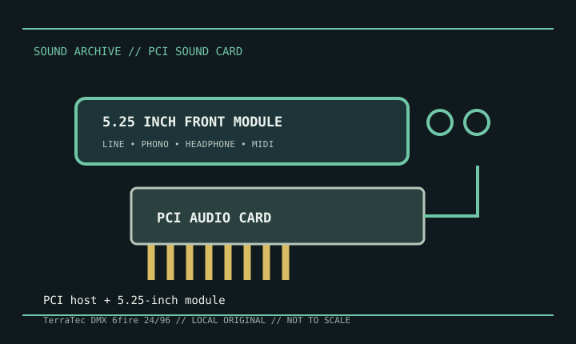

[ INDIVIDUAL MODEL // SOUND HARDWARE ]
TerraTec DMX 6fire 24/96
The DMX 6fire 24/96 is a PCI-based audio system commonly supplied with a 5.25-inch front-bay module. Its record describes the complete system rather than a bare generic PCI card; verify package contents and cable routing on second-hand units.

Detailed specifications
| Exact model / scope | TerraTec DMX 6fire 24/96. Do not conflate it with DMX 6fire USB or other TerraTec 6fire-branded products. |
|---|---|
| Bus / host | Conventional PCI host card; the matching bay module connects to the card using the system cable. A free 5.25-inch bay is needed only if the original panel is to be installed inside a case. |
| Analog I/O | The system combines multichannel analog output from the card with analog inputs, headphone and phono facilities on the front module. Consult the exact manual for jack direction and switching; do not treat the phono input as a line input. |
| Digital / MIDI | The documented system includes optical and coaxial S/PDIF connections and MIDI I/O on the associated module. Preserve the original module and connecting lead to keep those functions available. |
| Conversion / formats | The product is specified for 24-bit/96 kHz operation; actual rates and channels vary by analog/digital path and driver mode. |
| Drivers / operating systems | Model-specific TerraTec Windows drivers were issued for the product’s contemporary Windows generations. The product is legacy hardware; do not assume a current Windows release has an official driver. |
Compatibility & preservation
Photograph the bay module, host card, connecting cable, phono ground/line switches, and all connector labels as one system. Keep the model-specific driver/control panel and manual together; verify the selected sample rate and digital clock source during setup.
- Photograph the model marking, PCB revision, and all included brackets or cables before service.
- Save the matching driver, manual, and working host configuration; bus fit alone does not establish driver compatibility.
- Use the manufacturer’s model-specific pinout and routing diagram before connecting line, microphone, digital, or multichannel outputs.
Sources & documentation
- TerraTec DMX 6fire 24/96 user manual — Internet ArchiveScanned model manual with the original panel, routing, installation, and technical information.
- TerraTec DMX 6fire 24/96 manual — ManualsLibManual mirror for connector and operating-mode cross-reference.